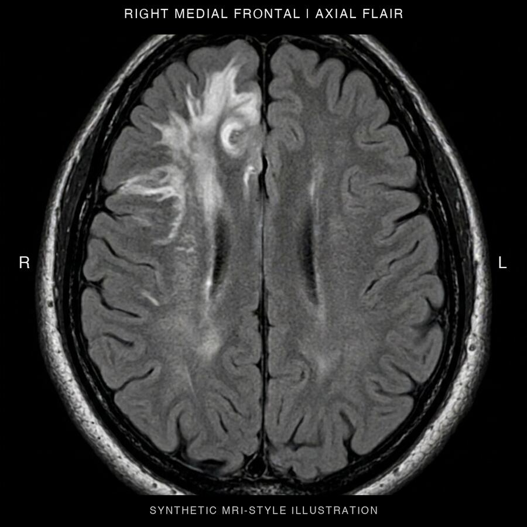

Case Conference
Four fictional glioma teaching cases for senior residents. Read the vignette, commit to an anatomical account, then compare it with the debrief. Synthetic MRI-style plates, no patient data.
Open the Case ConferencePilot. Debriefs are awaiting independent clinical review.